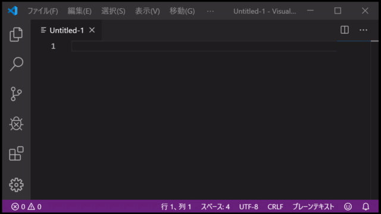

ffxiun0
FF11 連携検索辞書
IME の入力にてウェポンスキルの連携を検索する辞書です。

ダウンロード
- FF11連携検索辞書
-
scdic-20230913.zip
- ソースコード
- https://github.com/ffxiun0/scdic
辞書ファイル
| 辞書名 |
ファイル名 |
用途 |
| FF11連携検索辞書 |
scdic-main-google.txt |
Google 日本語入力用 |
| scdic-main-win10.txt |
Microsoft IME ユーザー辞書用 (Windows 10) |
FF11連携しない検索辞書
（連携が発生しない組合せを検索） |
scdic-nochain-google.txt |
Google 日本語入力用 |
| scdic-nochain-win10.txt |
Microsoft IME ユーザー辞書用 (Windows 10) |
- .dctx ファイルは 10,000 語までしか対応しないため収録していません。
- .dic ファイルはシステム辞書化が失敗するため収録していません。
システム要件
- Google 日本語入力
- Microsoft IME Windows 10/11
使い方
武器種・WS・連携属性の名前を「＞」で繋いで入力することでWSと連携属性の組み合わせが変換候補に出てきます。
- 【例】武器種から検索
-
- りょうておの＞りょうておの
- スチールサイクロン(湾曲)＞アップヒーバル(核熱)＞[核熱]
- 【例】連携属性から繋がるWSを検索
-
- かくねつ＞りょうておの
- (核熱)＞ウッコフューリー(分解)＞[光]
- 【例】武器種から光連携を絞り込む
-
- りょうておの＞りょうておの＞ひかり
- アップヒーバル(核熱)＞ウッコフューリー(分解)＞[光]
- 【例】武器種とWSを指定
-
- かたてけん＞あっぷ
- シャンデュシニュ(光)＞アップヒーバル(A)(光)＞[光]<終>
- 【例】武器種からWS一覧を見る
-
- りょうておの
- キーンエッジ(収縮)【両手斧】
- フルブレイク(湾曲)【両手斧/SP/戦】
- ...
- 【例】WS名からの詳細を見る
-
- あっぷひーばる
- アップヒーバル(核熱/収縮)【両手斧/武神流秘奥義/戦暗剣】
- アップヒーバル(A)(核熱/収縮/光)【両手斧/イオニック/戦】
武器種・WS・連携属性の名前を「｜」で繋いで入力することで連携の発生しないWSの組合わせが変換候補に出てきます。
- 【例】連携の発生しない組合せを検索
-
- さべっじ｜りょうてけん
- 【連携しない】サベッジブレード(分解/切断)｜レゾルーション(分解/切断)
- 【連携しない】サベッジブレード(分解/切断)｜デミディエーション(光/分解)<自己連携有>
- 【連携しない】サベッジブレード(分解/切断)｜フロストバイト(硬化)
- ...
【組み合わせの一覧】
| 入力 |
動作 |
| 武器種 |
武器種のWS一覧 |
| WS名 |
WSの詳細 |
| 武器種＞武器種 |
連携検索 |
| 武器種＞WS名 |
連携検索 |
| WS名＞武器種 |
連携検索 |
| WS名＞WS名 |
連携検索 |
| 連携属性＞武器種 |
連携属性から繋がるWSを検索 |
| 連携属性＞WS名 |
連携属性から繋がるWSを検索 |
| 武器種＞武器種＞連携属性 |
発生する連携属性を絞って検索 |
| 武器種＞WS名＞連携属性 |
発生する連携属性を絞って検索 |
| WS名＞武器種＞連携属性 |
発生する連携属性を絞って検索 |
| 連携属性＞武器種＞連携属性 |
発生する連携属性を絞って検索 |
| 武器種｜武器種 |
連携の発生しない組合せを検索 |
| 武器種｜WS名 |
連携の発生しない組合せを検索 |
| WS名｜武器種 |
連携の発生しない組合せを検索 |
| WS名｜WS名 |
連携の発生しない組合せを検索 |
| むげんれんけい |
無限に連携できるWSの一覧 |
【武器種の読み一覧】
| 格闘 | かくとう |
| 短剣 | たんけん |
| 片手剣 | かたてけん |
| 両手剣 | りょうてけん |
| 片手斧 | かたておの |
| 両手斧 | りょうておの |
| 両手槍 | りょうてやり |
| 両手鎌 | りょうてかま |
| 片手刀 | かたてとう |
| 両手刀 | りょうてとう |
| 片手棍 | かたてこん |
| 両手棍 | りょうてこん |
| 弓術 | きゅうじゅつ |
| 射撃 | しゃげき |
インストール（Google日本語入力）
- zipファイルを展開する。
- Google日本語入力のトレイアイコンを右クリックし「辞書ツール」を開く。
- 「管理」＞「新規辞書にインポート」を押す。
- 「ファイルを選択」を押し「scdic-google.txt」を選択する。
- 「辞書名」に「FF11連携検索辞書」と入力する。
- 「インポート」を押す。
インストール（Microsoft IME Windows 10）
IMEの動作が非常に重くなる事があるため、あまりお勧めできません。
既にユーザー辞書を使用している場合は上書きせずに辞書ファイルをバックアップして下さい。
容量が大きいため辞書ツールの動作不良にてユーザー辞書が壊れてしまう場合があります。
- zipファイルを展開する。
- トレイアイコンの IME を右クリック「追加辞書サービス」＞「辞書の設定」を開く。
- 「ユーザー辞書＞「編集」を押す。(ユーザー辞書ツールが開く)
- メニューから「ファイル」＞「新規作成」を押す。
- 「ファイル名」に「FF11連携検索.dic」と入力し「開く」を押す。
- メニューから「ツール」＞「テキスト ファイルからの登録」を押す。
- 「scdic-win10.txt」を選択し「開く」を押す。（5分程度かかります）
- ユーザー辞書ツールのウィンドウを閉じる。
- IME の詳細設定ウィンドウの「ユーザー辞書」＞「参照」を押す。
- 「FF11連携検索.dic」を選択し、開くを押す。
当ホームページに記載されている会社名・製品名・システム名などは、各社の登録商標、もしくは商標です。